<br>
#### Project Proposal
<h1>Idea 1: Long-travel Gearbox MTB Frame</h1>
<strong><u><b>Problems:</b></strong></u>
<ol>
<li><b>Suspension Travel</b>
<br> 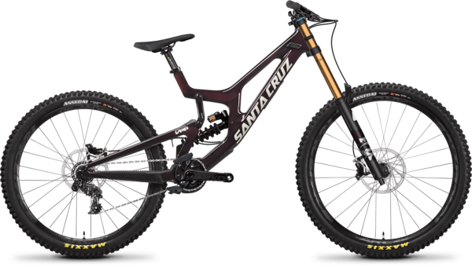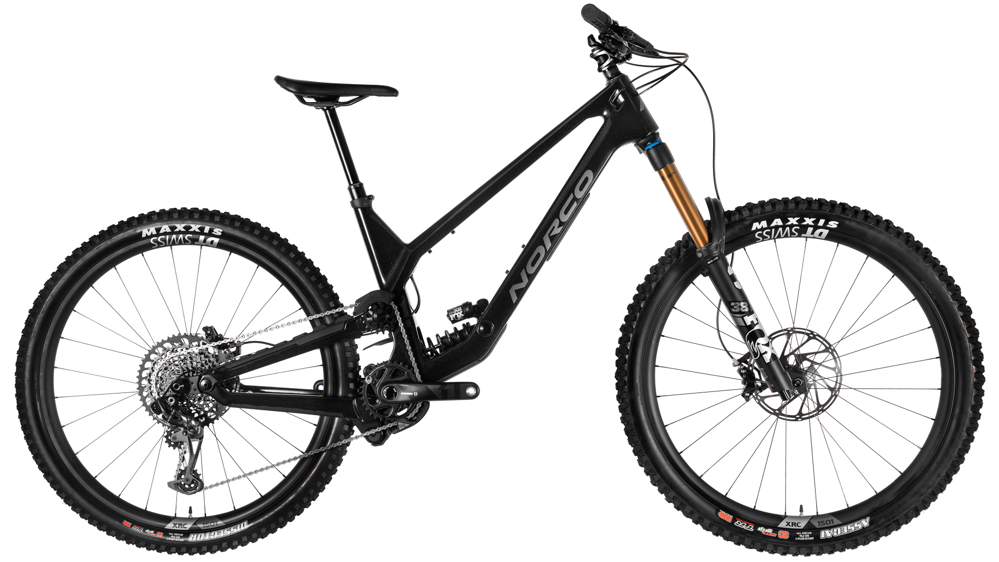</br>
<br><small><i>Santa Cruz V10 (215mm travel) vs. Norco Range (180mm travel). Just bridge the gap already! </small></i></br>
For all intents and purposes, there are two main classes of mountain bikes: ones that go uphill AND downhill, and ones that ONLY go downhill. The ones that only go downhill have historically had way more suspension travel than the ones that do both, but that gap is closing. Still, it's not quite there yet - downhill bikes still have >200mm whereas the long-travel "enduro" bikes have ~180mm at most. By the time you've reached 180mm of suspension travel, you've already sacrificed so much pedaling efficiency that you might as well bump the travel up to >200mm to gain more confidence descending (IMO). Unfortunately, no mountain bike manufacturer has made a bike like this yet.</li>
<br><li><b>Geometry</b></br>
<br>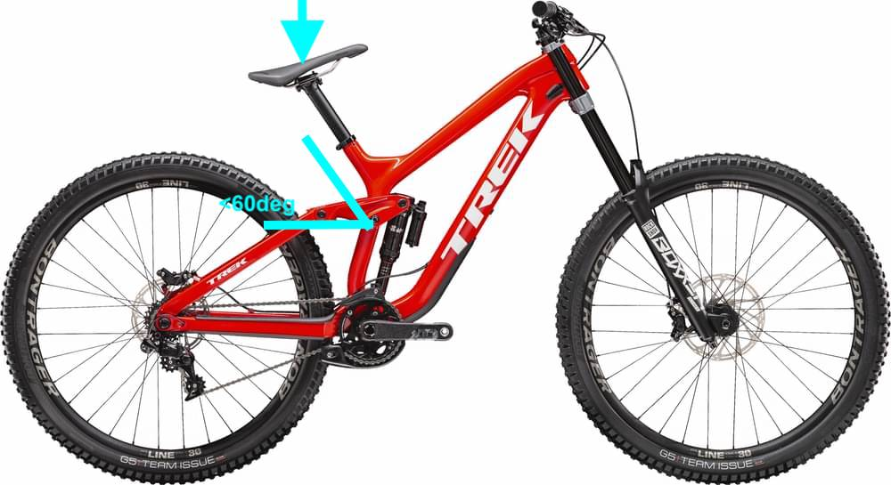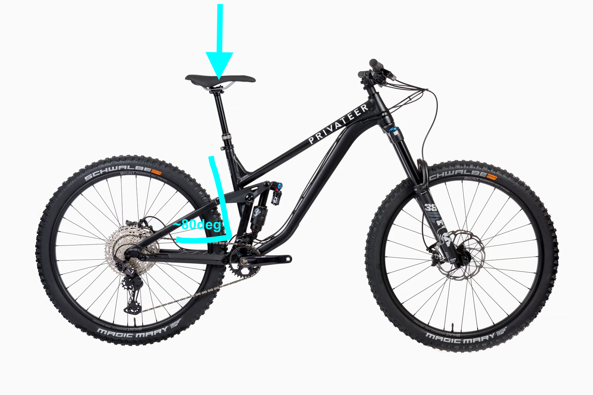</br>
<small><i>The seated climbing positions of a DH bike and enduro bike, compared</i></small>
Enduro bikes don't have geometry as adapted to descending as that of DH bikes; i.e. 64deg head angles vs. 62deg head angles. Conversely, DH bikes don't have geometry adapted to pedaling uphill. Their slack seattube angles, which work a wonder while descending by moving the seat out of the way of your legs, don't work well for pedaling - it puts you in a seated climbing position where you can hardly reach your bars and places most of your body weight close to the rear axle of the bike, preventing you from weighing the front wheel on climbs. The short seattubes of DH bikes also mean you usually won't be able to fit a long enough dropper in there. </li>
<br><li><b>Derailleurs</b></br>
<br>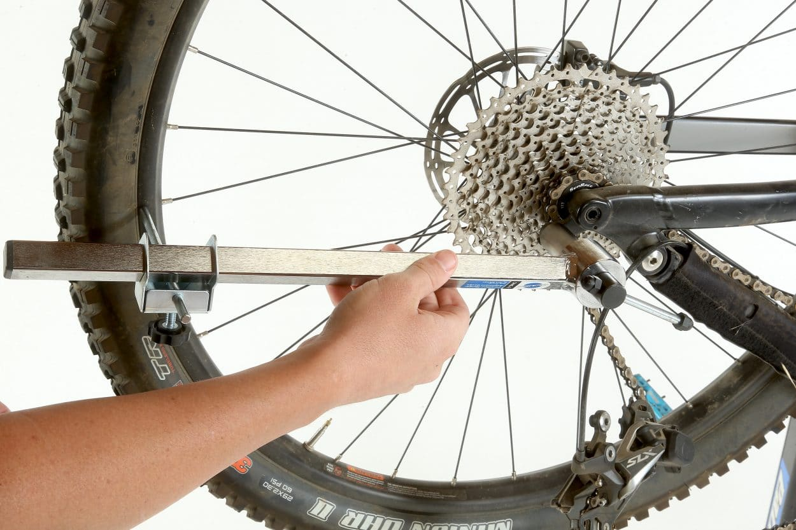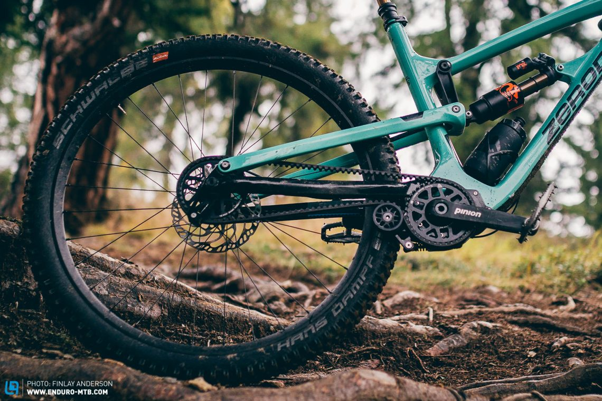</br>
<small><i>Derailleurs have a habit of getting bent or torn off. With nothing hanging off the back, there's nothing to smash.</i></small>
<br>Derailleurs add unsprung mass, which worsens suspension performance, and are essentially overpriced disposable items that are one rock strike away from being bent or destroyed. Due to their low drag, they make a lot of sense for Cross-Country mountain biking, but for anything other than that, they're just too fragile to be reliable.</li></br>
<li><b>Kinematics</b>
<br>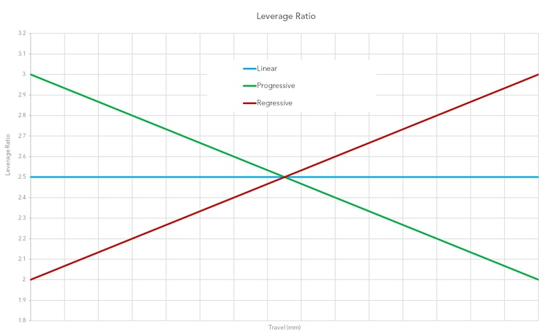</br>
<small><i><center>Leverage ratio graphs. Progressive leverage ratio shown in green.</i></small></center>
<br><i>a. Progressivity</i> - the increase in force required to compress the shock as the bike goes deeper into its suspension travel - is the determining factor for how a bike's suspension performs downhill. A progressive leverage ratio that follows a straight line can override badly-set up/cheap suspension, making for good small-bump absorption and a predictable ride. Unfortunately, many enduro bikes still have leverage ratios that are too linear (largely because many consumers complain that it is too hard to use full travel upon first getting their bike), meaning that riders have to spend an inordinate amount of time setting up their suspension to compensate for that.</br>
<br><i>b. Anti-squat</i> - the amount of resistance a bike's suspension has to compressing (squatting) under pedaling - largely determines its efficiency uphill. Modern enduro bikes have good anti-squat (typically a little above 100%, which does a pretty good job of negating pedal squat), meaning they're pretty good for going uphill (relative to how much suspension travel they have). The anti-squat of DH bikes, however, is not optimized for pedaling uphill. </br>
<br><i>c. Anti-rise</i> determines suspension performance under braking. At 100% anti-rise, your rear suspension does not compress or rise during braking - in effect, it stiffens up, keeping your bike's dynamic geometry while braking more or less the same at the cost of braking traction. At <100% anti-rise, your rear suspension rises during braking, staying high and active in its travel, allowing it to absorb bumps at the cost of upseting your bike's dynamic geometry. I prefer anti-rises around 50-60%, but no commercially available gearbox-equipped mountain bikes have an anti-rise that low.</br>
</li>
</ol>
<b>Solutions:</b>
1. Design an enduro bike with the same amount of suspension as DH bikes (>200mm).
2. ...which also has geometry like that of a DH bike's.
3. Other than DH bikes' overly slack seattube angles.
4. Use a GEARBOX. There are so many advantages: it's a fully sealed system (no more bent or broken derailleurs!), has far longer service intervals, is generally easier to service, has completely consistent anti-squat, and - most importantly - significantly reduces unsprung mass, making your suspension perform far better, especially for descending. It's free traction! The only disadvantage of a gearbox is some extra mass and extra drag, but if you're not in a rush to finish your climb, it - literally - only adds a few seconds.
5. Design a bike that has a progressive leverage ratio, >100% anti-squat, and middling levels of anti-rise.
Luckily, I've already done that - twice! Here are the two designs and some of their key kinematics.
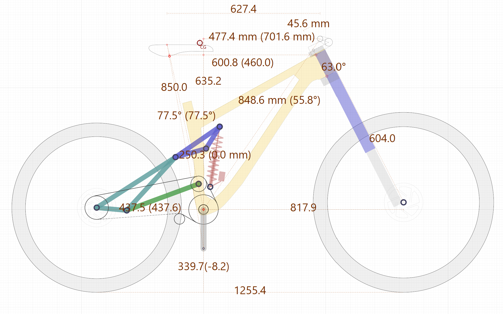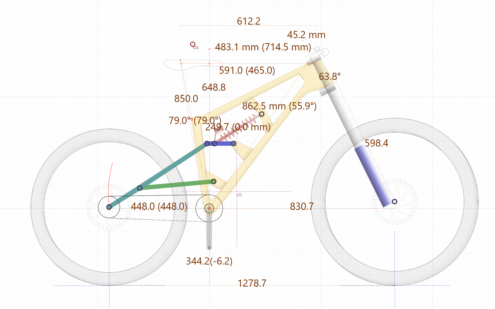
<br>
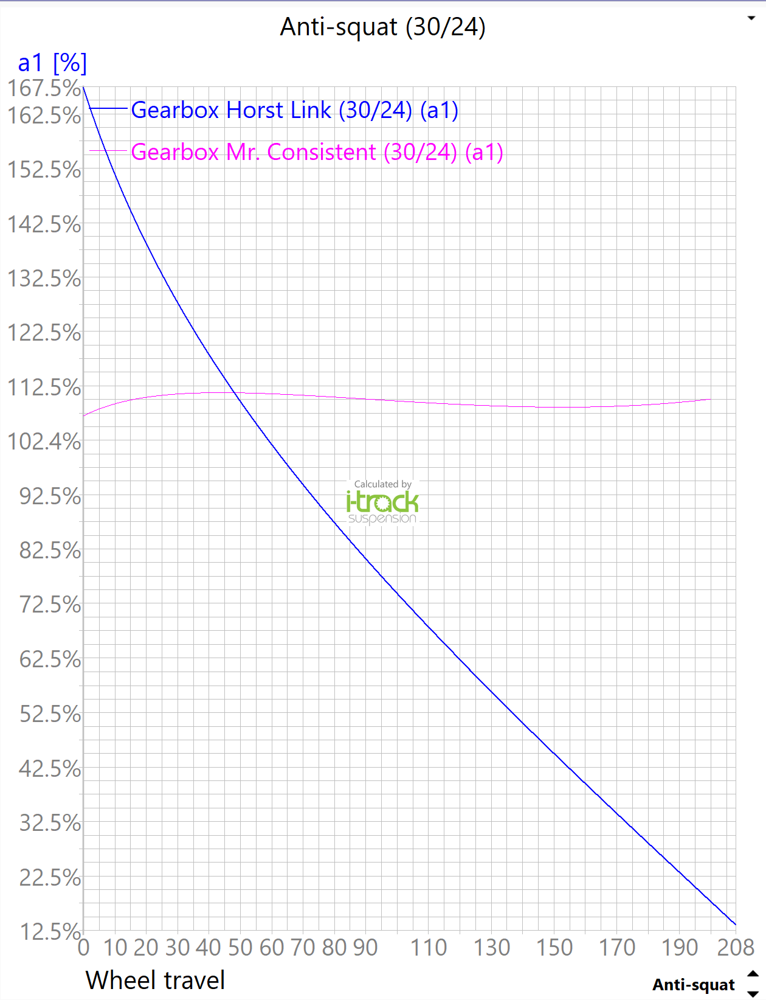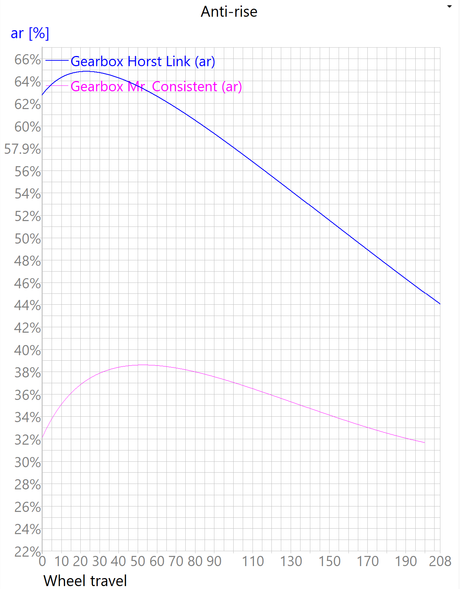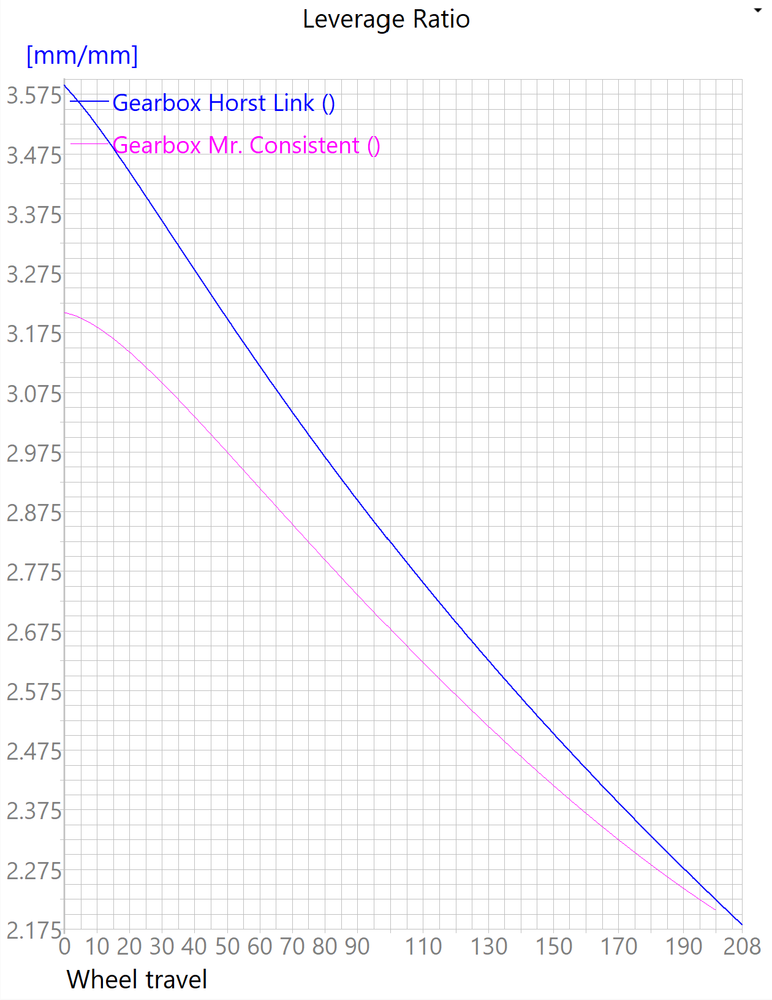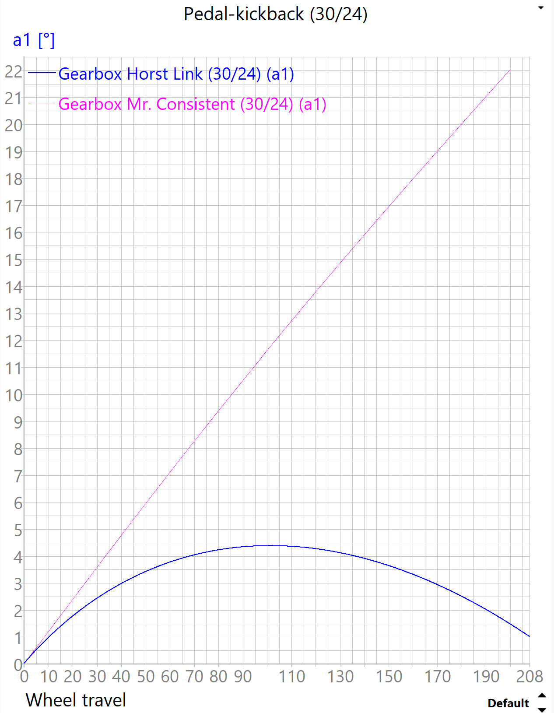
/////////////////////////////////////////////////////////////////////////////////////////////////////////////////////////////////////////////////////////////////////////////////////////////////////////////////////////////////////////////////////////////
<h1>Idea 2: Automatically Adjusting Dropper Post</h1>
<br><b>Preface</b></i>
Dropper posts are one of the most revolutionary innovations in mountain biking ever. Prior to dropper posts, riders who wanted good pedaling efficiency (or to simply be able to pedal while sitting down) had to raise their seatposts to full extension, which got in their way while they were descending.
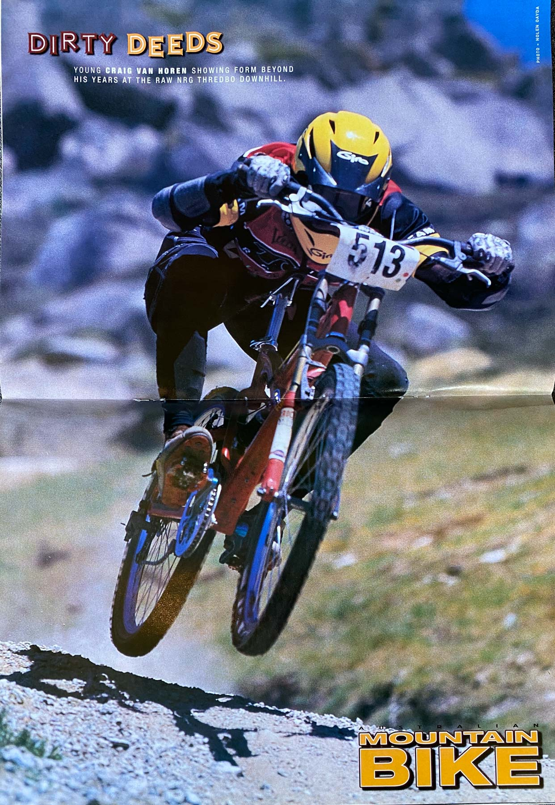
<small><i><center>Riders had to bend themselves behind their rear wheel while descending to stay out of their seatpost (and seat's) way.</i></small></center>
So, for the longest time, riders had to adopt a yoga position to stay out of their seatpost's way while descending. This also forced bike designers to design bikes to be small enough for riders to reach while riding over the back wheel - this meant making the front end short and the rear end even shorter, making for an unbalanced, unstable ride.
Then, dropper posts came along, giving riders the ability to adjust their seatpost height at the flip of a switch. Wanna raise your seatpost for a climb? Just hold down the lever. Wanna drop your seatpost for a descent? Hold down the lever and sit on your seat. Thanks to dropper posts, you can now pedal efficiently and not have your seatpost in the way while descending. Hooray!
Also, because the yoga position that the traditional seatpost forced riders to adopt was no longer a factor, bike designers could design bikes with longer front and rear ends that put riders in a more centered body position - a revolutionary change that has massively improved the handling of mountain bikes and made the sport infinitely more accessible.
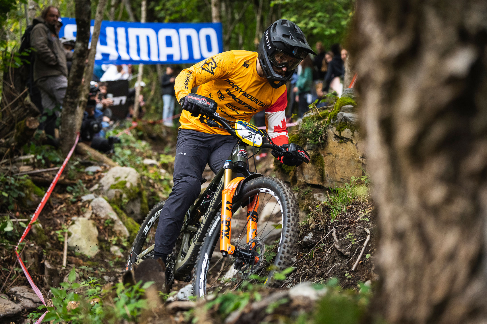
<small><i><center>Look how much more comfortable modern riders look!</i></small></center>
<br><b>Problems & Solutions </b></i>
So, dropper posts are pretty good - but what if they can be made even better? Here are a few scenarios where dropper posts, uh, drop the ball.
<ol>
<li>You have to constantly toggle your dropper post lever for rolling hills, quickly-changing terrain or technical climbs, weighting and unweighting your seat while doing so. </li>
<li>You had a thumb injury like I did, which made it hard to toggle your dropper post lever - especially repeatedly.</li>
<li>I bet my bottom dollar you've messed up a climb before because you left your seatpost at the wrong height. </li>
</ol>
My solution for these problems is a self-adjusting dropper post. Here are some sketches for my idea:
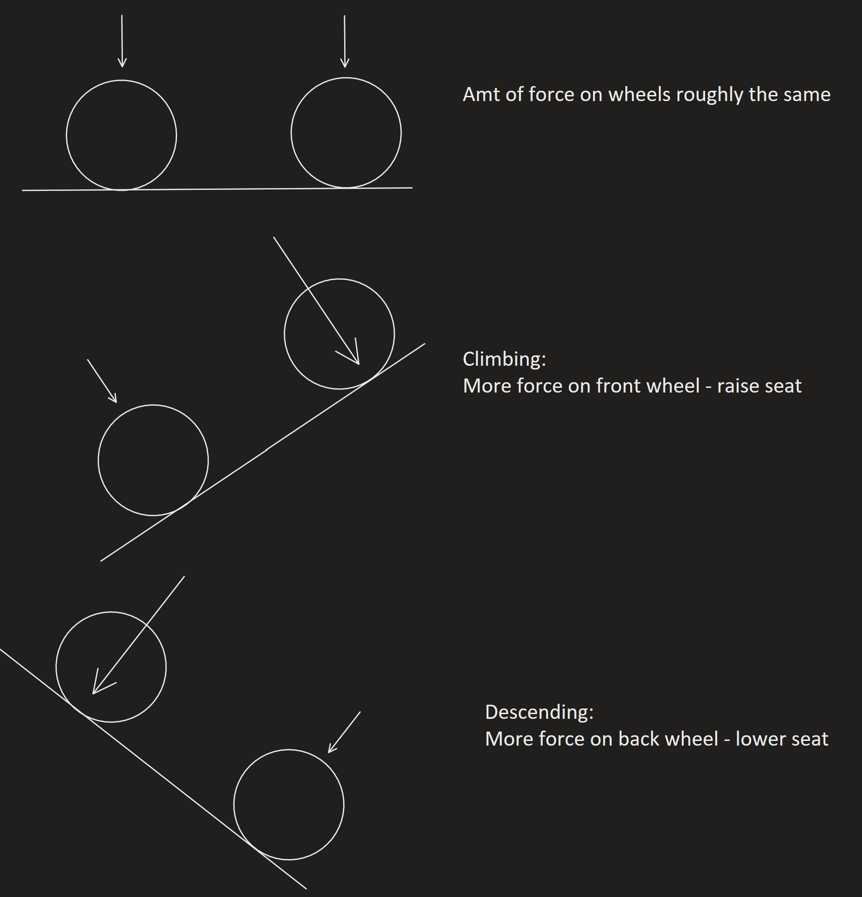